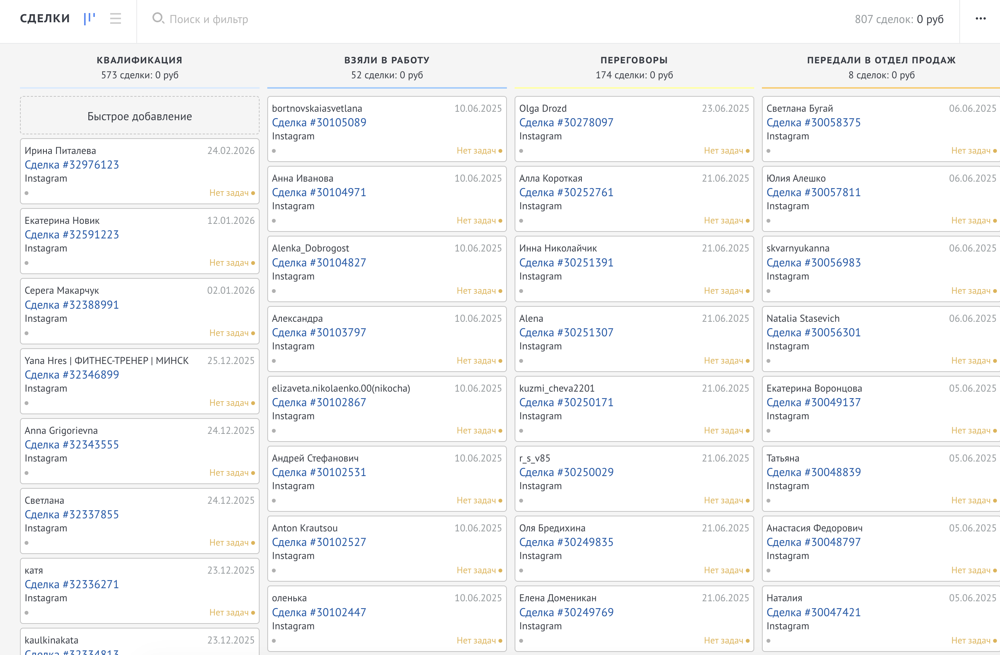
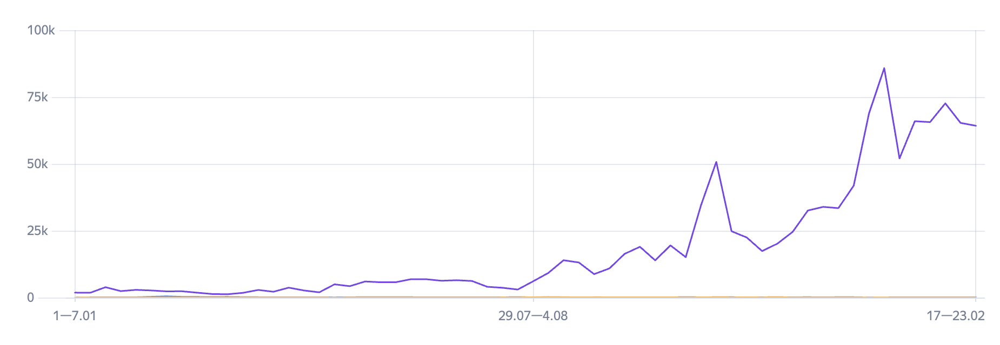
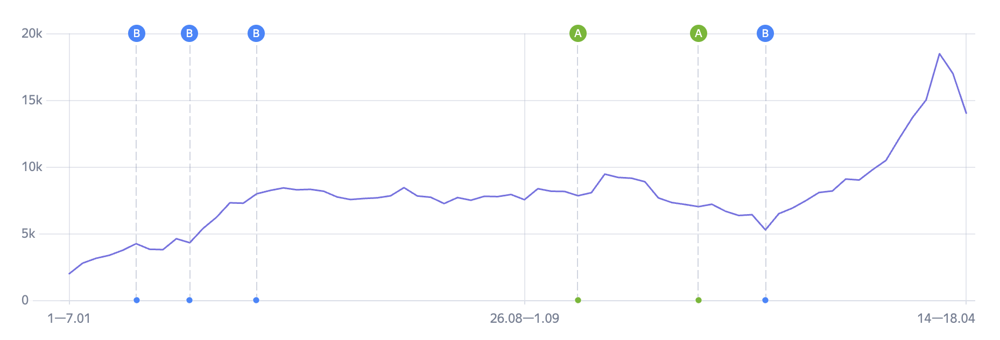
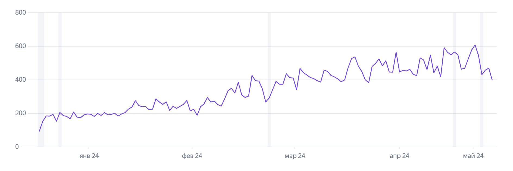
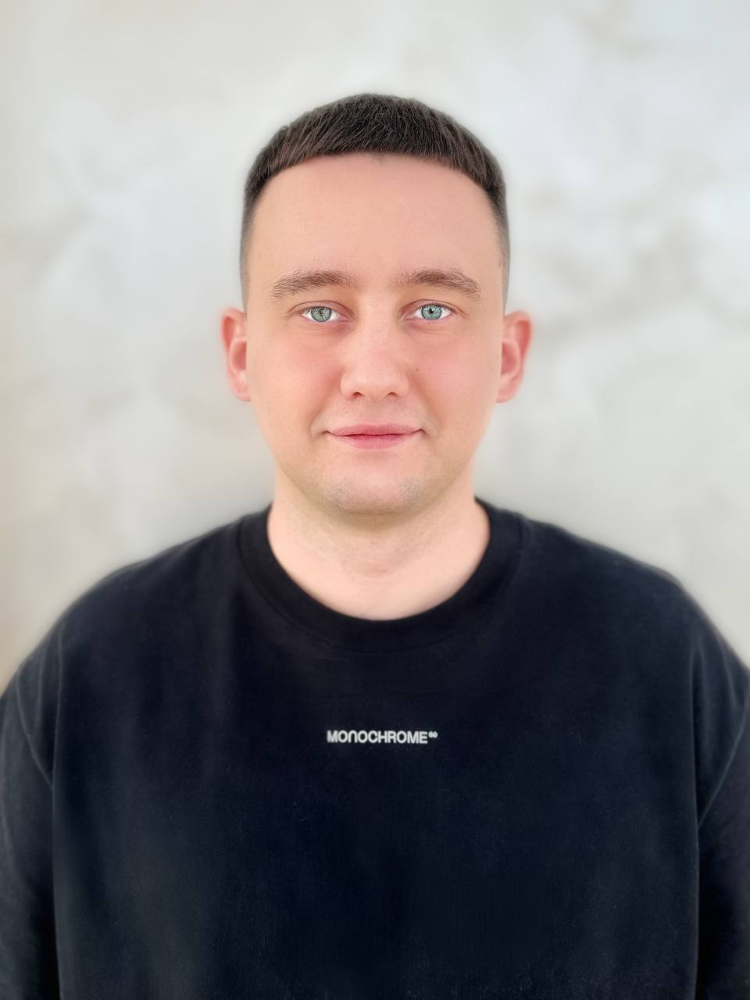

Квартальный обзор
CPL Директа вырос на 30%
Бюджет тот же — лидов меньше. Аукцион перегрет, конкуренты задирают ставки. Каждый квартал — на 20–40% дороже.
Знакомо?
Рост позиций в первую неделю · заметный рост лидов в вашей CRM на 7–10 день
Единственное SEO, где экономика канала читается в вашей Метрике и вашей CRM, а не в закрытом отчёте агентства. Поведенческий мини-тест на ваших запросах — до подписания договора.

Заявки из SEO — в вашей AmoCRM, отфильтрованные по источнику. Не в нашем отчёте, не в чужом дашборде.
Четыре ситуации, в которых маркетинг-директор оказывается каждый квартал.
Бюджет тот же — лидов меньше. Аукцион перегрет, конкуренты задирают ставки. Каждый квартал — на 20–40% дороже.
Позиции +32%, трафик +47%. Открываете свою CRM — лидов из органики за год: 14. Связи между этими цифрами нет.
Получает заявки из органики бесплатно. Вы — платите Директу 8 000 ₽ за каждый клик по тем же запросам.
В отчёте подрядчика — позиции и трафик. В вашей CRM — нечего показать. Бюджет SEO режут под ноль.
Защитить SEO-бюджет на следующий квартал, показав CPL в 2–3 раза ниже Директа — в собственных инструментах, а не в чужой презентации.
Покажем бесплатно за 48 часовГлавное различие между классическим SEO-агентством и Entropium — операционная модель. И именно она определяет, сможете ли вы как маркетинг-директор защитить SEO-бюджет перед руководством.
Это не дополнительная фича для галочки. У нас просто нет своего дашборда — все данные в ваших инструментах. Это структурная особенность модели, и именно поэтому мы можем гарантировать прозрачность в договоре. Нам нечего прятать.
Полный цикл SEO. Все направления ведутся параллельно — но интенсивность меняется по этапам. Вот roadmap проекта от первого дня до плато.
Первые движения позиций в Вебмастере к концу первой недели
Заметный рост лидов в вашей CRM. Если результат есть — подписываем договор и масштабируем работу. Если нет — расходимся, никто никому ничего не должен.
50+ запросов в топ-10. Рост органического трафика на 40–80%. Стабильный поток лидов из органики в CRM.
Сайт выходит на органическое плато. CPL из SEO ниже Директа в 1,5–2 раза.
200+ запросов в топ-10. CPL ниже Директа в 2–3 раза. Конкуренты не вытесняют — поведенческий слой держит позиции.
Это не маркетинговая фраза с сайта. Это конкретный пункт договора с конкретными последствиями за нарушение.
Пока работает наш договор с вами — мы не берём в работу ваших прямых конкурентов в вашем городе. Не «постараемся избежать» — не берём.
Семантика, посадочные, гипотезы и стратегии работают исключительно на вас. Мы не «обкатываем» их сначала на одном клиенте, потом на другом.
Конкретный пункт договора с указанием неустойки за нарушение. Можете проверить до подписания.
Ни одно крупное сетевое агентство не пообещает вам это в договоре. Им выгоднее вести всю вашу нишу разом — это их бизнес-модель, на которой они зарабатывают. Мы устроены иначе: один клиент по нише = глубокая фокусировка = результат, который воспроизвести невозможно.
Большинство SEO-агентств просят год доверия и оплаты вперёд. Мы — нет. Покажем работу метода на вашем сайте до того, как вы примете любое решение о сотрудничестве. И всё это — бесплатно.
Вы уже обжигались на агентствах, которые красиво говорят и ничего не показывают. Убеждать словами — бессмысленно. Гораздо честнее просто показать, на что мы способны. А вы решите, интересно ли двигаться дальше.
Если у вашего сайта уже есть посадочные страницы под ключевые запросы — в процессе разбора запустим работу с поведенческими сигналами на 3–5 ваших ключевых запросов. За 7–10 дней увидите движение позиций и заметный рост лидов в своей CRM — на своём сайте, не на чужих кейсах.
Это и есть наша главная гарантия: не показали результата за неделю — не подписываем договор. Никто никому ничего не должен. Реальная работа метода до того, как вы вложили хоть рубль.
Всё общение проходит удалённо — письменно или на созвоне, как вам удобно. Мы подстраиваемся под вас, а не наоборот.
Вы коротко рассказываете о ситуации: какая ниша, какой город важен, как сейчас идут лиды, что уже пробовали в SEO.
Дальше работаем без вас: разбираем сайт, смотрим конкурентов в вашем городе и нише, оцениваем потенциал. Никаких долгих встреч или брифов.
Письмом или повторным созвоном — на ваш выбор. Покажем, что нашли и какой потенциал. Документ остаётся у вас.
Эта информация полезна сама по себе — даже если вы решите не работать с нами. Вы уходите с реальным пониманием ситуации, а не с очередной красивой презентацией.
После разбора вы сами решаете, как двигаться дальше. Никакого давления.
Получаете стратегию и план — дальше работаете с любым подрядчиком, в штате или внешним. Будем рады услышать обратную связь через полгода.
Если решите так — никаких претензий. Документ ваш, метод объяснили — пользуйтесь.
Запускаем поведенческий мини-тест на 3–5 ваших ключевых запросов. За 7–10 дней увидите движение позиций и рост лидов в своей CRM.
Если результат есть — подписываем договор и масштабируем работу на полный пул. Если нет — расходимся, никто никому ничего не должен.
Условия и стоимость обсуждаем индивидуально после разбора — под ваш проект, нишу и город.
Цифры говорят лучше любых слов. Все клиенты — давние партнёры, отзывы доступны по запросу.

Партнёрство: 4 года
Точка А: SQL-лид из Яндекс.Директа — 4 800 ₽
Точка Б: SQL-лид из органики — 1 750 ₽. Поток — стабильно ~150 заявок в месяц.
Что сделали: полный цикл — техническая база, расширение каталога под низкочастотные коммерческие запросы, работа с поведенческими сигналами на ключевые группы запросов.
Итог: стоимость лида снизилась в 2,7 раза.

Партнёрство: 6 лет
Точка А: SQL-лид из Директа — 9 200 ₽, с Авито — 6 800 ₽
Точка Б: SQL-лид из органики — 3 400 ₽. Поток — 65 заявок в месяц из SEO.
Что сделали: региональная семантика, посадочные под каждый сегмент оборудования, работа с поведенческими сигналами на ключевые B2B-запросы по 12 городам.
Итог: стоимость лида снизилась в 2,7 раза.

Партнёрство: 3 года
Точка А: SQL-лид из Директа — 6 500 ₽
Точка Б: SQL-лид из органики — 2 100 ₽. Поток — 94 заявки в месяц.
Что сделали: полный цикл + работа с репутационной выдачей и геозависимыми запросами по всему СПб.
Итог: стоимость лида снизилась в 3,1 раза.
Письменные и видеоотзывы от руководителей отделов продаж и маркетинговых директоров — тех, кто первым принимает заявки и лучше всех знает их качество — доступны по запросу.

Основатель Entropium · 9 лет в SEO
Лично записываю каждый разбор сайта — без помощников, шаблонов и аккаунт-менеджеров. Если вы оставите заявку — увидите меня лично на первом созвоне. Не «вашего проджекта», не «менеджера по работе с клиентами». Меня.
А дальше проект ведёт специализированная команда под ваш тип бизнеса. У нас три отдельные команды — каждая работает только в своей сфере и знает её до мелочей. Без универсалов, которые сегодня делают стоматологию, а завтра — завод оборудования.
За 9 лет работы в SEO — 200+ проектов в топе Яндекса, средний срок партнёрства с клиентами — 5–9 лет. Это и есть лучшая гарантия из возможных: люди не остаются годами с тем, что не работает.
Интернет-магазины, каталоги, маркетплейсы
Стоматологии, юристы, медицина, ремонт
Производство, дистрибуция, услуги для бизнеса
Не обязательно менять прямо сейчас. Давайте сравним цифры: сколько заявок в месяц вы получаете из органики и во сколько обходится каждая — в вашей CRM, не в их отчёте. Если результат устраивает — отлично. Если нет — разберём, почему и что можно улучшить. Бесплатно и без обязательств.
У нас нет своего закрытого дашборда агентства, который мы вам показываем раз в месяц. Все данные — в ваших инструментах: ваша Яндекс Метрика, ваш Search Console, ваша CRM, ваш коллтрекинг. Любая цифра, которую мы называем — вы видите её сами в режиме реального времени. Это не дополнительная фича, это структурная особенность нашей модели работы.
Мы не берём в работу ваших прямых конкурентов в вашем городе по вашей нише, пока работает наш договор с вами. Это пункт договора с конкретной неустойкой за нарушение. Не «мы постараемся избегать конфликта интересов». Конкретное юридическое обязательство, которое вы можете проверить до подписания. Ваши рекламные связки, семантика и стратегии работают исключительно на вас.
За 9 лет работы и 200+ проектов в нашей практике таких случаев не было. Используем собственную методологию с многоуровневой защитой — на созвоне расскажу, как именно она устроена и за счёт чего даёт стабильный результат без рисков.
Первые движения позиций по средне- и низкочастотным запросам — в первую неделю. Заметный рост лидов в вашей CRM — на 7–10 день. Это и есть наш поведенческий мини-тест, который мы делаем до подписания договора. Стабильный поток заявок и снижение CPL ниже Директа в 2 раза — 4–6 месяц. Через 6–9 месяцев основной сайт выходит на органическое плато.
Большинство агентств за 30–50k делают одно направление работы из четырёх — обычно технику и немного контента. Работу с поведенческими сигналами почти никто не делает, а именно она даёт ускорение. Поэтому мы стоим дороже и даём результат там, где предыдущие подрядчики не справились. Если сомневаетесь — берите поведенческий мини-тест в подарок: за 7–10 дней увидите движение позиций и рост лидов на своём сайте до подписания договора.
Это не критично — на разборе честно скажем, что нужно сделать в первую очередь. Если у вас нет CRM — на старте поможем настроить базовую систему отслеживания: цели в Метрике, форму обратной связи с привязкой к источнику. Это нужно в первую очередь вам — чтобы видеть, что и сколько приносит.
Да. Базово работаем под Яндекс — по статистике, для 90% коммерческих сайтов в РФ это закрывает основной поток лидов. При необходимости подключаем Google.
3 месяца — объективный минимум, чтобы методология начала давать видимый результат: техническая база, контент и поведенческий контур требуют времени для накопления эффекта. Дальше — помесячное продолжение, без обязательств продлевать.
У нас три специализированные команды — под e-commerce, сайты услуг и B2B. Каждая берёт максимум один новый проект в квартал — поэтому общий лимит ровно 3. Команды работают глубоко: знают свой тип бизнеса до мелочей, не размазывают внимание на разные ниши. Подготовка нового специалиста уровня нашего лида занимает год — поэтому быстро масштабироваться не можем. Это структурное ограничение модели, а не маркетинговая редкость.
Если узнали свою ситуацию в этом тексте — давайте просто поговорим. Без обязательств и давления.
Напишите или позвоните любым удобным способом — отвечаем в течение 30 минут в рабочее время. Если не взяли трубку — перезвоним сами.
Помните: свободных мест у нас сейчас не больше трёх. После того как одно из них займёт компания из вашей ниши и города — для вас вход закрывается по условиям нашего договора с ними.
Покажем, по каким запросам конкуренты забирают ваших клиентов и какой реальный потенциал у вашего сайта в органике. За 48 часов.